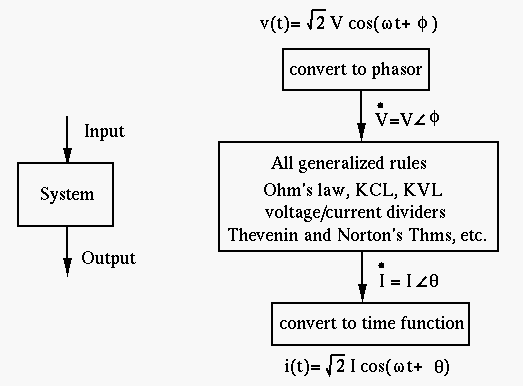
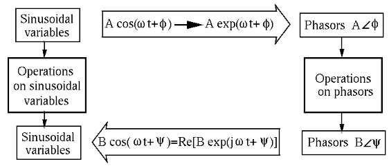
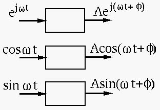
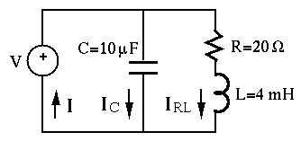

Solving AC Circuits by DE
While DC circuit analysis is carried out by solving algebraic equations, the analysis of AC circuits composed of capacitors, inductors as well as resistors will require solving differential equations (DEs). The solution of a DE represents the response (or output) of the circuit to both the external input and the initial state, and is composed of two parts:
Example:
Given an RL circuit consisted of a resistor and an inductor in series connected
to an AC voltage source
 , find the current
, find the current
 .
.
The governing DE describing the circuit can be obtained based on KVL
We want to find its particular or steady state solution. (The homogeneous or
transient solution due to the non-zero initial condition will be discussed
later.) As the DE describes a linear system, the superposition principle
applies
 . We can first find the solutions for
. We can first find the solutions for


Solving AC circuit by phasor method
If only the steady state solutions of the DE describing an AC circuit is of interest, the phasor method can be used to solve the problem algebraically without solving the DEs. Specifically, all sinusoidal variables are represented as phasors in terms of their amplitudes and phases, and all components in the circuit (L and C, as well as R) are represented by their impedances, so that all the laws (Ohm's law, KCL and KVL, current and voltage dividers, parallel and series combinations of components) and methods (loop current and node voltage methods, Thevenin's and Norton's theorems, etc.) discussed for DC circuit can be applied.

Operations on sinusoidal variables based on the trigonometric identities are in general lengthy and tedious. The phasor method can convert such sinusoidal variables to vectors in complex plane and thereby simplify the operations.
The phasor represents the amplitude (effective or RMS value) and phase of a sinusoidal function, but leaves out its frequency as it is known to be the same for all sinusoidal variables in the system.
Specifically here are the three steps of the phasor method for arithmetic
operation of two sinusoidal functions
 and
and
 of the same frequency:
of the same frequency:

The operations on the original sinusoidal variables require solving differential equations, while the operations on their phasors only require solving algebraic equations. This is the main advantage of the phasor method.
Generalized Ohm's law and Kirchhoff's Laws
In general, all methods such as Ohm's law and Kirchhoff's Laws used for DC
circuits composed of resistors can be generalized to AC circuits composed
of capacitors, inductors, as well as resistors, all represented by their
impedances. Also, if we assume all voltages and currents in a circuit are
sinusoids of same frequency  , they can be represented as complex
phasors.
, they can be represented as complex
phasors.
The Ohm's law can be generalized to become:

Example:
The RL circuit considered previously can now be resolved by the phasor method,
as only the steady state solution is of interest. Specifically, here the
current  can be much more easily found by generalized Ohm's law.
The complex representation of the input voltage is
can be much more easily found by generalized Ohm's law.
The complex representation of the input voltage is

![\begin{displaymath}
i(t)=Re[{\bf I}]=Re\left[\frac{1}{\sqrt{R^2+\omega^2 L^2}}e^...
...\right]
=\frac{1}{\sqrt{R^2+\omega^2 L^2}}\cos(\omega t-\phi)
\end{displaymath}](img155.png)

Example
Consider three sinusoidal voltage sources
 ,
,
 and
and
 in series. According to KVL, the
overall voltage will be the algebraic sum of the three:
in series. According to KVL, the
overall voltage will be the algebraic sum of the three:

While the addition of these sinusoidal functions is not easy to carry out
(still remember all the trigonometric identities?), it is quite straight
forward to find the vector sum if the voltages are represented as phasors:


Example:
Solve the circuit below. The voltage from the generator is
 .
.

First find the impedances and admittances of the components and the two
branches. As  , we get
, we get


 .
.
Example: A current
 flows through a circuit composed of a resistor
flows through a circuit composed of a resistor  , and capacitor
, and capacitor
 and an inductor
and an inductor
 connected in series. Find the resulting voltage across all
three elements.
connected in series. Find the resulting voltage across all
three elements.